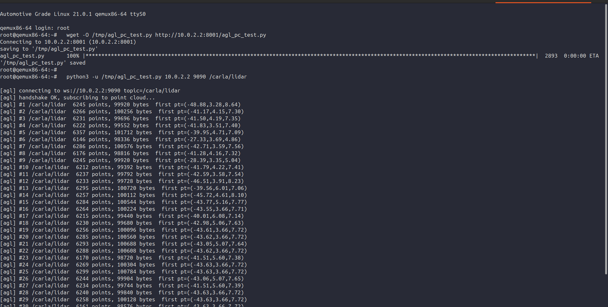

Two threads this week: the target board hit a hardware wall (and a replacement is on the way), while on the software side the pipeline reached a real milestone — a live CARLA LiDAR point cloud arriving inside AGL, produced on a machine with no graphics card at all.
The plan was to move from the emulated AGL VM onto a real single-board computer: a Raspberry Pi 4B running an AGL + ROS2 image. The image was prepared, but the board would not boot — the failure was at the hardware level, not the image, and repeated attempts didn't get past it.
Decision After discussing the situation with the mentors, we concluded the Pi 4B wasn't the right path forward for this project, and ordered a Jetson Nano as the target board instead. The Jetson is a much better fit anyway: it has an NVIDIA GPU, which matters for the GPU-bound parts of the perception stack later on.
The board not being available didn't block progress, though — because the whole pipeline can still be developed and proven against the AGL virtual machine, exactly as in Weeks 1–2. So the week's real work moved to the software side.
The core of this project is a LiDAR point cloud. The obstacle: CARLA's LiDAR is ray-cast on the GPU, and the only machine large enough to run CARLA is a server with no graphics card at all (no NVIDIA, no /dev/dri). The conventional wisdom — and our own earlier assumption — was that this simply can't produce LiDAR data.
That turned out to be wrong. The fix was to point CARLA's renderer at a software Vulkan driver (Mesa's lavapipe), which renders entirely on the CPU. Without it, CARLA grabbed a non-existent GPU driver, its render thread timed out after 60 seconds, and the engine crashed. With it, off-screen rendering runs on the CPU and the LiDAR sensor works.
# force CARLA onto the CPU (software) Vulkan driver, then launch headless
export VK_ICD_FILENAMES=/usr/share/vulkan/icd.d/lvp_icd.json
export VK_DRIVER_FILES=/usr/share/vulkan/icd.d/lvp_icd.json
./CarlaUE4.sh -RenderOffScreen -vulkan -nosound -carla-rpc-port=2000Result: headless CARLA generates a real LiDAR point cloud on a GPU-less server — thousands of points per frame. It runs slowly (~0.33 Hz, since the GPU work falls back to the CPU), so CARLA is driven in synchronous mode: the simulation steps one fixed tick at a time and every frame is processed regardless of wall-clock speed. Perfect for development; a real GPU (the incoming Jetson) is only needed for real-time speed.
A point cloud is far too large to ship as JSON the way the Week 2 odometry was. So the bridge was extended to carry the cloud as raw bytes over a local TCP socket, where a small ROS2 process repacks it into a standard sensor_msgs/PointCloud2 message:
From inside the AGL virtual machine, a tiny standard-library WebSocket client subscribes to the topic. The host is always reachable from the guest at 10.0.2.2 over QEMU's networking:
root@qemux86-64:~# python3 -u /tmp/agl_pc_test.py 10.0.2.2 9090 /carla/lidar
[agl] handshake OK, subscribing to point cloud...
[agl] #1 /carla/lidar 5796 points, 92736 bytes first pt=(-18.90,9.58,3.74)
[agl] #2 /carla/lidar 5755 points, 92080 bytes first pt=(-24.28,14.98,5.03)
[agl] #3 /carla/lidar 5680 points, 90880 bytes first pt=(-20.75,16.44,4.67)The AGL image is receiving a live LiDAR point cloud from CARLA — roughly 5,700 points (~91 KB) per frame, with real 3D coordinates, the numbers changing as the simulated car drives.

/carla/lidar — a continuous stream of point-cloud frames (point count, byte size, and a sample 3D point) arriving from headless CARLA over rosbridge. LiDAR point cloud data is now visible inside AGL.End-to-end, on one GPU-less box. CARLA (software-rendered LiDAR) → a two-process raw-byte bridge → a ROS2 PointCloud2 topic → rosbridge → the AGL VM. Every link runs on a single machine without a graphics card.
Alongside the raw cloud, a small PCL perception node (C++) was also built and run against the same stream — voxel downsample → ground-plane removal (RANSAC) → Euclidean clustering → 3D bounding boxes — producing 5–8 detected objects per frame. This validates the perception approach, but it currently runs in a development environment on the server. Making that node run embedded on AGL itself (the goal behind “ROS-Embedded” perception) is part of the upcoming hardware work.